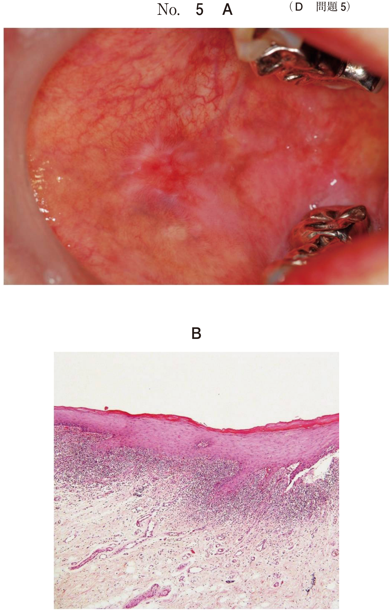
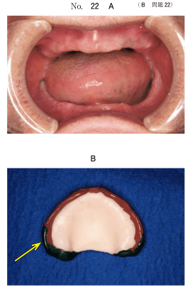
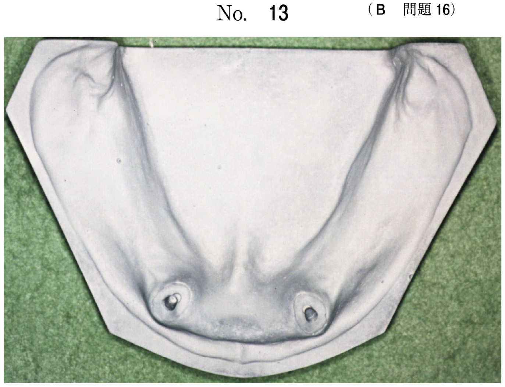
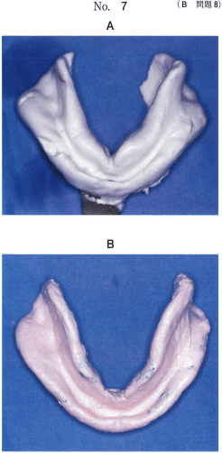
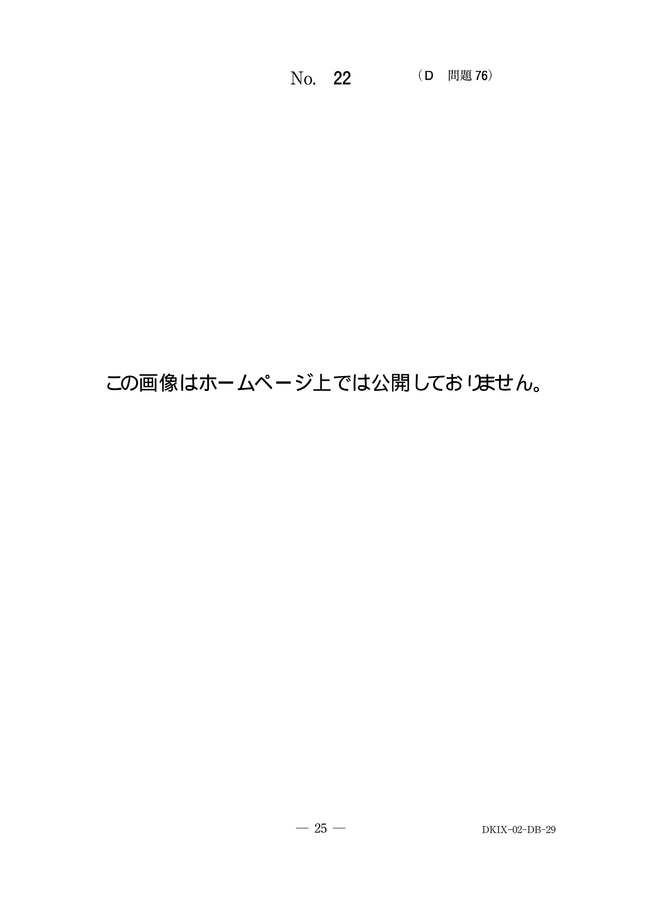
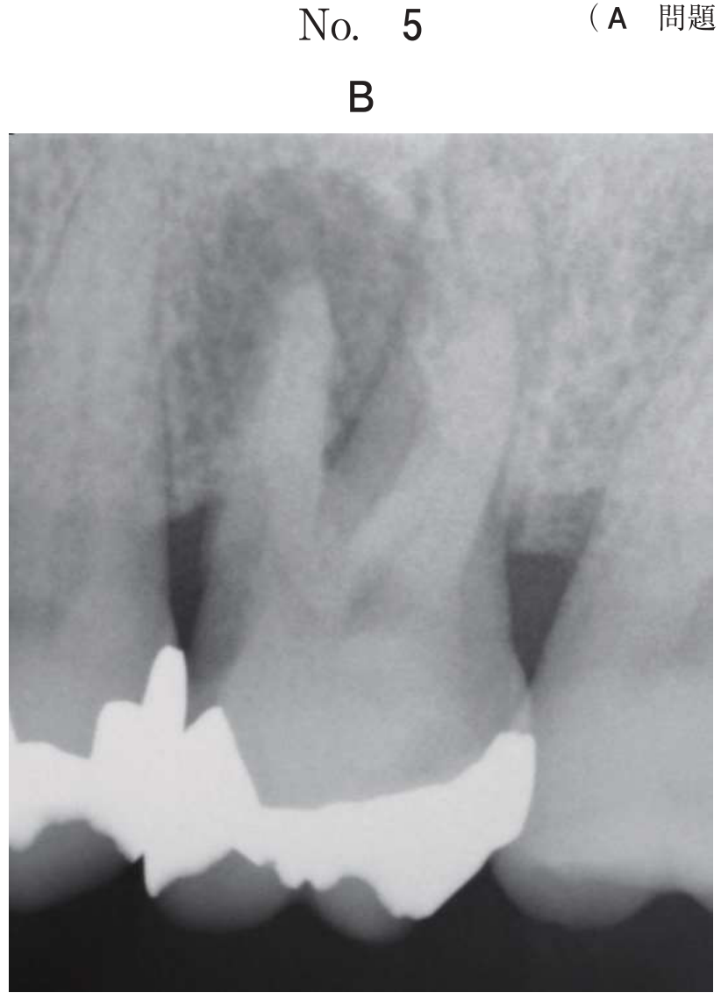

精密印象
精密印象採得の目的
概形印象で得られた印象域の概形をもとに、個人トレーを用いて精密な印象を採得する。
粘膜表面の解剖学的構造を精密に再現しつつ、筋圧形成により床縁形態を決定する。
筋圧形成（個人トレーによる）
個人トレーにモデリングコンパウンドを付着させ、口腔の機能運動を行わせながら辺縁形成を行う。
上顎の筋圧形成
| 部位 | 機能運動 | 形成される構造 |
|---|---|---|
| 上顎前歯部 | 上唇伸展、口角牽引、示指吸引 | 上唇小帯切痕 |
| 上顎臼歯部（右側） | 左側方運動 | 右側頬側面 |
| 上顎臼歯部（左側） | 右側方運動 | 左側頬側面 |
| 翼突下顎ヒダ | 最大開口 | 後縁切痕 |
| 口蓋後縁（ポストダム） | 圧接 | 後縁封鎖 |
反対側への側方運動で頬側面を形成する。
右側を形成 → 左側方運動
左側を形成 → 右側方運動
下顎の筋圧形成
| 部位 | 機能運動 | 関与する筋 |
|---|---|---|
| 下唇小帯 | 口唇突出、口角牽引、術者が牽引 | 口輪筋 |
| 頬側前庭部 | 下口唇挙上 | オトガイ筋 |
| 頬小帯部 | 頬を引張る | 頬筋 |
| 頬棚 | 頬粘膜を排除しながら形成 | 頬筋 |
| 大臼歯後方 | 閉口運動 | 咬筋 |
| 舌側 | 舌運動、嚥下 | 舌筋群 |
注意：オトガイ筋は義歯を脱離させる方向に作用する。顎堤吸収が進むと影響が大きくなる。
精密印象材
- シリコーンゴム印象材：細部再現性に優れる
- ポリサルファイドゴム印象材：流動性良好
- 酸化亜鉛ユージノール印象材：無圧印象に適する
過去問
68歳の男性。新義歯製作のため印象採得を行うこととした。口腔内写真（別冊No.11A）と筋圧形成時の写真（別冊No.11B）とを別に示す。
写真Aの矢印で示す部位の筋圧形成に有効な機能運動の組合せはどれか。1つ選べ。


b イ
c ウ
d エ
e オ
【解説】矢印部位に対応する筋圧形成の機能運動の組合せを選択する問題。各部位に適切な機能運動を行う。
65歳の男性。上下顎全部床義歯を製作中である。初診時の口腔内写真（別冊No.22A）と筋圧形成後の個人トレーの写真（別冊No.22B）とを別に示す。
矢印で示す部位の筋圧形成に必要な下顎の運動はどれか。2つ選べ。

b 後方運動
c 右側方運動
d 左側方運動
e タッピング運動
【解説】上顎左側臼歯部の頬側面の筋圧形成には右側方運動が必要。また前方運動も頬筋の緊張に関与する。
70歳の女性。咀嚼困難を主訴として来院した。検査の結果、上下顎全部床義歯を新製することとした。印象採得操作中の上顎個人トレーの写真（別冊No.25）を別に示す。
この部位の筋圧形成に有効な運動はどれか。2つ選べ。

b 唾液を嚥下する。
c 下顎を左右に動かす。
d 頰部を前後に牽引する。
e 口唇・頰部をすぼめる。
【解説】上顎頬側部の筋圧形成には頰部を前後に牽引と口唇・頰部をすぼめる運動が有効。頬筋の動きを記録する。
68歳の女性。咀嚼困難を主訴として来院した。検査の結果、上下顎全部床義歯を新たに製作することとした。アルジネート印象材を用いて概形印象を採得した後、個人トレーを製作し筋圧形成を行っている。筋圧形成操作中の写真（別冊No.8）を別に示す。
この操作で形成される解剖学的構造はどれか。1つ選べ。

b 舌小帯
c 下唇小帯
d 後顎舌骨筋窩
e 前顎舌骨筋窩
【解説】写真は下顎前歯部唇側の筋圧形成。術者が下唇を牽引して下唇小帯の付着部位を明瞭に印記させている。
75歳の女性。全部床義歯の脱落を主訴として来院した。検査の結果、新義歯を製作することとした。製作過程で行ったある操作の写真（別冊No.29）を別に示す。
この操作中に行う機能運動はどれか。2つ選べ。

b 舌突出
c 口角牽引
d 最大開口
e 下顎側方運動
【解説】写真は下顎臼歯部頬側の筋圧形成。最大開口で咬筋の影響を排除し、下顎側方運動で頬筋の動きを記録する。
精密印象の採得前に行ったある操作の写真（別冊No.13A、B、C）を別に示す。
この操作の目的はどれか。2つ選べ。

b 小帯付着位置の印記
c 前歯排列位置の参考
d リップサポートの確保
e フラビーガムの変形防止
【解説】写真は筋圧形成の操作。目的は床縁形態の形成と小帯付着位置の印記。前歯排列やリップサポートは別の段階で考慮する。